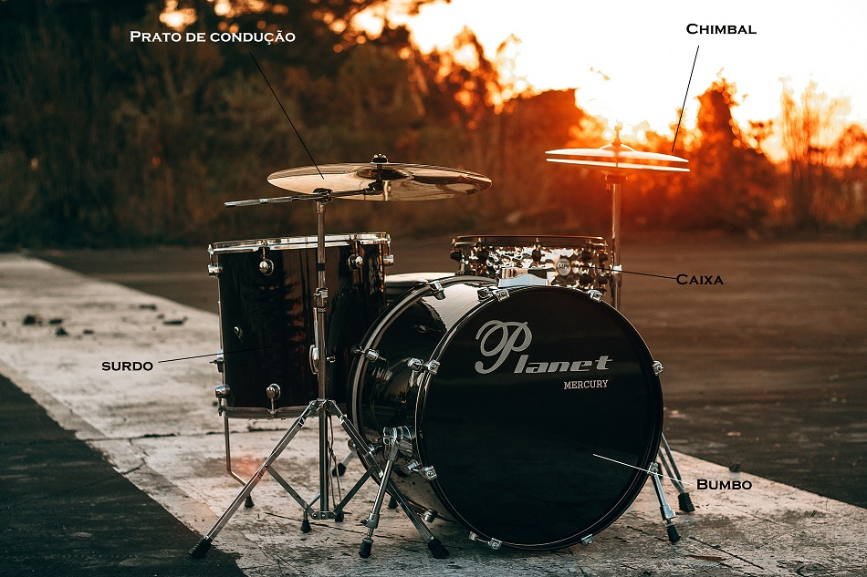
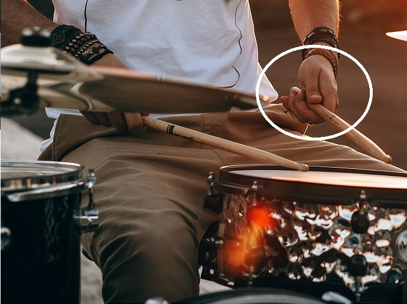

Bateria faz música?
Antes de responder essa pergunta, vamos conhecer as peças do instrumento
Foto de Ingridi Alves Photograph
A música nasce a partir de 3 elementos:
- Melodia - Uma nota de cada vez.
- Harmonia - Notas que se combinam, tocadas juntas.
- Ritmo - Tempo da música.
Logo, podemos dizer que a bateria é um instrumento de ritmo, embora, ela esteja apenas marcando o tempo, faz total diferença em um conjunto.
Pegando na baqueta
Existe um padrão para pegar na baqueta, chama-se pinça. Existem 2 tipos de pinças, a tradicional e a mais convencional.
Pinça convencional - vamos utilizar essa!
Baqueta entre polegar e indicador, como um ganchinho, feche os outros dedos. Lembrando que o principal ponto de equilibrio está 4 dedos depois da ponta inferior.
Photo by Ingridi Alves Photograph on Unsplash
Preparação:
Cada baterista organiza suas peças da forma que mais lhe agrada.
Bateristas da igreja, por exemplo, deixam a caixa com posicionamento reto, devido a algumas tecnicas e sons diferenciados que podem ser extraídos do aro da caixa.
Baterista de heavy metal, normalmente utilizam pedal duplo.
Bateristas de rua optam por uilizar malas no lugar do bumbo (o som é maravilhoso).
Gosto é que nem celular, cada um tem o seu
Antes de iniciar seus estudos, importante lembrar que sempre é necessário ajustar as peças.
- Sente - se no banco
- Mantenha a coluna reta
- Regule o banco para a posição mais confortével
- Traga a caixa para o meio das pernas
- Alinhe os pés sobre os pedais
Metrônomo
Metrônomo é o objeto que marca o tempo da música. Informando o tempo de execução e dos exercícios também.
Já escutou alguma vez um "teque" contínuo no fundo de uma música? Pois bem, é o tal do metrônomo em ação.
Com ele visualizamos os "BPMs", ou batidas por minuto, confesso que ele é chatinho, mas todo mundo tem um amigo chato... fique amigo do metônomo, nunca será uma perda de tempo, rs!
Podemos comprar um metrônomo em uma loja de instrumentos ou baixar o aplicativo. Existem milhares...
Mas se você é prático e não gosta de perder tempo, segue abaixo um metrônomo fácil de utilizar e que esta disponível gratuitamente na net, O metrônomo do Google ;)
Clica aquiVideo aula
←Voltar